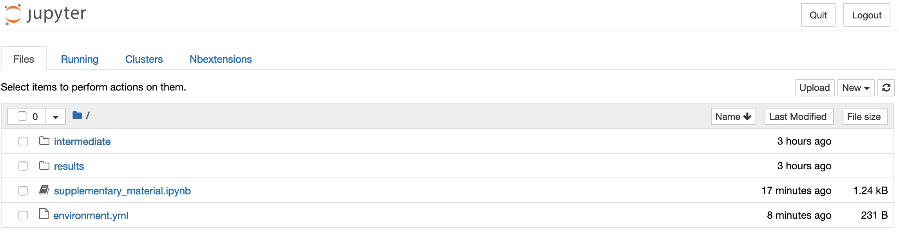
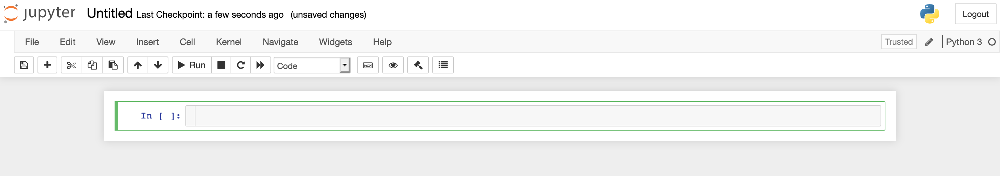

Jupyter 2 the basics
One thing that sets Jupyter Notebook apart from what you might be used to is that it's a web application, i.e. you edit and run your code from your browser. But first you have to start the Jupyter Notebook server:
jupyter notebook --allow-root
You should see something similar to this printed to your terminal:
[I 18:02:26.722 NotebookApp] Serving notebooks from local directory: /Users/john/workshop-reproducible-research/tutorials/jupyter
[I 18:02:26.723 NotebookApp] 0 active kernels
[I 18:02:26.723 NotebookApp] The Jupyter Notebook is running at:
[I 18:02:26.723 NotebookApp] http://localhost:8888/?token=e03f10ccb40efc3c6154358593c410a139b76acf2cae000
[I 18:02:26.723 NotebookApp] Use Control-C to stop this server and shut down all kernels (twice to skip confirmation).
[C 18:02:26.724 NotebookApp]
Copy/paste this URL into your browser when you connect for the first time,
to login with a token:
http://localhost:8888/?token=e03f10ccb40efc3c6154358593c410a139b76acf2cae785c
[I 18:02:27.209 NotebookApp] Accepting one-time-token-authenticated connection from ::1
A note for Windows users
If you see the error message Start : This command cannot be run due to the
error: The system cannot find the file specified. ... then try starting
jupyter with jupyter notebook --no-browser then copy the URL given into the
browser directly.
Jupyter Notebook probably opened up a web browser for you automatically,
otherwise go to the address specified in the message in the terminal. Note that
the server is running locally (as http://localhost:8888) so this does not
require that you have an active internet connection. Also note that it says:
Serving notebooks from local directory: </some/local/path/workshop-reproducible-research/tutorials/jupyter>
Everything you do in your Notebook session will be stored in this directory, so you won't lose any work if you shut down the server.

What you're looking at is the Notebook dashboard. This is where you manage your files, notebooks, and kernels. The Files tab shows the files in your directory. The Running tab keeps track of all your processes. The third tab, Clusters, is used for parallel computing and won't be discussed further in this tutorial. Finally, the Nbextensions tab shows a list of configurable notebook extensions that you can use to add functionality to your notebook (as we'll see below).
Let's start by creating an empty notebook by selecting the Files tab and clicking New > Python 3. This will open up a new tab or window looking like this:

Tip
If you want to start Jupyter Notebooks on a cluster that you SSH to (e.g. Uppmax) see the section in the Extra material
Jupyter notebooks are made up of cells, and you are currently standing in the first cell in your notebook. The fact that it has a green border indicates that it's in "Edit mode", so you can write stuff in it. A blue border indicates "Command mode" (see below). Cells in Jupyter notebooks can be of two types: markdown or code.
- Markdown: These cells contain static material such as captions, text, lists, images and so on. You express this using Markdown, which is a lightweight markup language. Markdown documents can then be converted to other formats for viewing (the document you're reading now is written in Markdown and then converted to HTML). The format is discussed a little more in detail in the R Markdown tutorial. Jupyter Notebook uses a dialect of Markdown called Github Flavored Markdown, which is described here.
- Code: These are the cells that actually do something, just as code chunks do in R Markdown. You can write code in dozens of languages and all do all kinds of clever tricks. You then run the code cell and any output the code generates, such as text or figures, will be displayed beneath the cell. We will get back to this in much more detail, but for now it's enough to understand that code cells are for executing code that is interpreted by a kernel (in this case the Python version in your Conda environment).
Before we continue, here are some shortcuts that can be useful. Note that they are only applicable when in command mode (blue frames). Most of them are also available from the menus. These shortcuts are also available from the Help menu in your notebook (there's even an option there to edit shortcuts).
| Shortcut | Effect |
| `enter` | enter Edit mode |
| `escape` | Enter Command mode |
| `ctrl` - `enter` | Run the cell |
| `shift` - `enter` | Run the cell and select the cell below |
| `alt` - `enter` | Run the cell and insert a new cell below |
| `s` | Save the notebook |
| `tab` | For code completion or indentation |
| `m`, `y` | Toggle between Markdown and Code cells |
| `d`- `d` | Delete a cell |
| `a` | Insert cells above current cell |
| `b` | Insert cells below current cell |
| `x` | Cut currently selected cells |
| `o` | Toggle output of current cell |
Writing markdown#
Let's use our first cell to create a header. Change the format from
Code to Markdown using the drop-down list in the Notebook Toolbar, or by
pressing the m key when in command mode. Double click on
the cell, or hit enter to enter editing mode (green frame) and input
"# My notebook" ("#" is used in Markdown for header 1). Run the cell with
ctrl-enter.
Tada!
Markdown is a simple way to structure your notebook into sections with descriptive notes, lists, links, images etc.
Below are some examples of what you can do in markdown. Paste all or parts of it into one or more cells in your notebook to see how it renders. Make sure you set the cell type to Markdown.
## Introduction
In this notebook I will try out some of the **fantastic** concepts of Jupyter
Notebooks.
## Markdown basics
Examples of text attributes are:
* *italics*
* **bold**
* `monospace`
Sections can be separated by horizontal lines.
---
Blockquotes can be added, for instance to insert a Monty Python quote:
Spam!
Spam!
Spam!
Spam!
See [here](https://jupyter-notebook.readthedocs.io/en/stable/examples/Notebook/Working%20With%20Markdown%20Cells.html) for more information.
Writing code#
Now let's write some code! Since we chose a Python kernel, Python would be the native language to run in a cell. Enter this code in the second cell and run it:
print("Hello world!")
Note how the output is displayed below the cell. This interactive way of working is one of the things that sets Jupyter Notebook apart from RStudio and R Markdown. R Markdown is typically rendered top-to-bottom in one run, while you work in a Jupyter notebook in a different way. This has partly changed with newer versions of RStudio, but it's probably still how most people use the two tools.
What is a Jupyter notebook? Let's look a little at the notebook we're
currently working in. Jupyter Notebooks are autosaved every minute or so, so you
will already have it available. We can be a little meta and do this from within
the notebook itself. We do it by running some shell commands in the third code
cell instead of Python code. This very handy functionality is possible by
prepending the command with !. Try !ls to list the files in the current
directory.
Aha, we have a new file called Untitled.ipynb! This is our notebook. Look at
the first ten lines of the file by using !head Untitled.ipynb. Seems like it's
just a plain old JSON file. Since it's a text file it's suitable for version
control with for example Git. It turns out that Github and Jupyter notebooks are
the best of friends, as we will see more of later. This switching between
languages and whatever-works mentality is very prominent within the Jupyter
notebook community.
Variables defined in cells become variables in the global namespace. You can therefore share information between cells. Try to define a function or variable in one cell and use it in the next. For example:
def print_me(str):
print(str)
... and ...
print_me("Hi!")
Your notebook should now look something like this.

The focus of this tutorial is not on how to write Markdown or Python; you can make really pretty notebooks with Markdown and you can code whatever you want with Python. Rather, we will focus on the Jupyter Notebook features that allow you to do a little more than that.
Quick recap
In this section we've learned:
- That a Jupyter notebook consists of a series of cells, and that they can be either markdown or code cells.
- That we execute the code in a code cell with the kernel that we chose when opening the notebook.
- We can run shell commands by prepending them with
!. - A Jupyter notebook is simply a text file in JSON format.